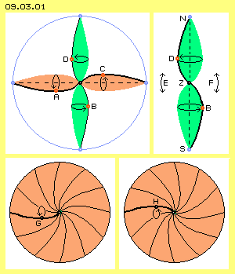
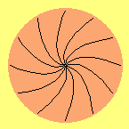
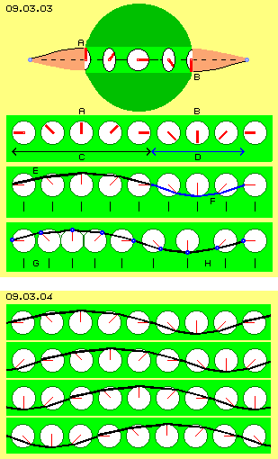
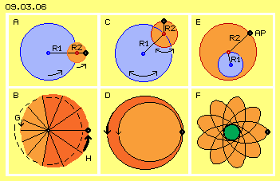
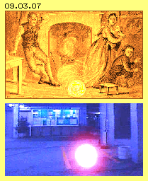
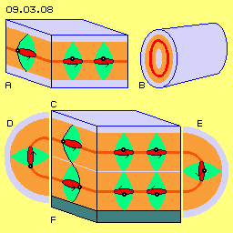
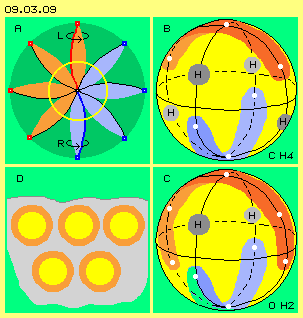
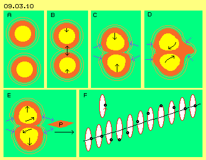
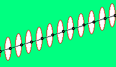
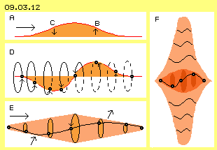

Perfekte Schwingungs-Kugel

Im vorigen Kapitel wurde bei Bild 09.02.04 bei C eine ´Doppel-Kurbel´ dargestellt. Deren prinzipielle Bewegungs-Struktur ist hier in Bild 09.03.01 oben links noch einmal skizziert. Der blaue Ring repräsentiert den umgebenden Freien Äther, welcher durch seinen generellen Äther-Druck dieses Gebilde stabilisiert. Eingezeichnet ist in horizontaler Ebene eine spiralige Verbindungslinie und der Bereich des Schwingens dieser Doppel-Kurbel ist hellrot markiert. Der Ätherpunkt A ist momentan links-unten positioniert und der gegenüber befindliche Ätherpunkt C rechts-oben. Damit die Abstände zwischen allen Ätherpunkten rundum konstant bleiben, muss unten ein Ätherpunkt B momentan nach rechts geschwungen sein und umgekehrt muss sich oben der Ätherpunkt D momentan links befinden. Diese Bewegungen verlaufen nicht linear auf-ab bzw.- links-rechts, alle Abläufe finden vielmehr als ein Schwingen auf runden Bahnen statt.
Rechts oben in diesem Bild ist noch einmal diese ´Spiral-Spindel´ in vertikaler Richtung zwischen dem ´Nord- und Südpol´ dargestellt und ihr Bewegungsbereich ist hellgrün markiert. Hier sind ausgleichende Bewegungen in vertikaler Richtung erforderlich, wie durch die gestrichelten Pfeile E und F angezeigt ist. Das ist praktisch identisch mit der zuvor diskutierten waagerechten Doppel-Kurbel in äquatorialer Ebene. Beide Doppel-Kurbeln bedingen sich also gegenseitig.
Unten in diesem Bild sind zwei Querschnitte dargestellt und jeweils eine Verbindungslinie ist dick gezeichnet. Links befindet sich darauf ein Ätherpunkt G momentan weit unten. Rechts zeigt der Querschnitt die Situation eine halbe Phase später, wo sich nun der gleiche Ätherpunkt (jetzt H bezeichnet) weit oben befindet. Rundum sind zusätzlich spiralige Verbindungslinien eingezeichnet, die alle ein analoges Schwingen aufweisen. In dieser Animation ist der Bewegungsablauf visualisiert. Alle Punkte auf den Verbindungslinien behalten immer gleichen Abstand zueinander. In diesem Querschnitt bewegen sich alle Punkte etwas im Uhrzeigersinn und anschließend zurück. Anstelle dieser flächigen Darstellungen verlaufen real alle Bewegungen schwingend auf runden Bahnen.
Hier sind nur vertikale und horizontale Querschnitte dargestellt, die im Prinzip identisch sind. Jeder andere Querschnitt ergibt das gleiche Bild. Das ganze System ist symmetrisch zum Zentrum. Die ganze Kugel ist in sich synchron und gleichförmig schwingend. Ausgehend vom umgebenden ´ortsfesten´ Äther erfolgt das Schwingen auf erweiterten Radien. Nach einem Maximum werden die Radien wieder kürzer, so dass bei diesem Bewegungsmuster das Zentrum kaum Bewegung aufweist. Das ist das in sich stabile Bewegungs-Prinzip des Elektrons.

Uhren rundum
In Bild 09.03.03 sind oben die äußeren Bereiche (hellrot) einer horizontalen Doppel-Kurbel dargestellt. Der mittlere Teil zeigt nun aber eine kugelförmige Sphäre (dunkelgrün). An deren linkem Rand ist ein Ätherpunkt A momentan in seiner obersten Position und am rechten Rand ist der Ätherpunkt B entsprechend in seiner untersten Position. Rund um den Äquator dieser Sphäre weist der Äther analoge Bewegung auf. Hier sind diese kreisenden Bewegungen als Uhren skizziert und das Ende der Uhrzeiger repräsentiert jeweils die Position eines beobachteten Ätherpunktes. Hier weist der Uhrzeiger links nach oben und der Uhrzeiger rechts weist nach unten. Entsprechend ´zeitlich versetzt´ müssen die Uhren dazwischen sein. Das hellgrüne Band repräsentiert also den Bereich am Äquator, das in der zweiten Zeile komplett abgewickelt ist. Bei A weisen der Zeiger nach oben, bei B nach unten.
Obwohl alle Uhren mit gleicher Drehgeschwindigkeit drehen, ergeben sich zwischen den Zeiger-Enden unterschiedliche Distanzen. Wenn die Zeiger in waagerechter Position sind, weisen sie einmal in entgegen gesetzte Richtung und ergeben eine lange Distanz C. Wenn sie zueinander zeigen ergibt sich eine kurze Distanz D. In der Zeile darunter sind alle Zeiger durch eine gekrümmte Verbindungslinie miteinander verbunden. In einer Zeithälfte ist diese langgestreckt (E, schwarz), in der zweiten Zeithälfte (F, blau) ist sie kürzer. Die Abstände zwischen den Ätherpunkten wäre damit nicht mehr konstant - was im lückenlosen Äther nicht zulässig ist.

Unterschiedliche lange Strecken je Zeiteinheit ergeben sich auch bei oben dargestelltem ´Schwingen-mit-Schlag´, womit auch hier diese Divergenz überbrückt werden könnte. Zum andern finden aber alle Bewegungen immer in alle drei Richtungen des Raumes statt. Die ´Uhren´ müssen nicht zwingend genau rechtwinkelig zur äquatorialen Ebene stehen. Wenn diese bei den langen Zwischenräumen E einwärts geneigt sind, werden die Abstände kürzer. Wenn umgekehrt bei den kurzen Zwischenräumen F die Uhrzeiger weiter nach außen gerichtet sind, werden die Abstände länger. Während des umlaufenden Schwingens ergeben sich damit also wieder konstante Abstände zwischen allen Ätherpunkten (allerdings würde der Äquator dabei etwas pulsierend erscheinen).
In der unteren Zeile dieses Bildes ist eine sehr viel einfachere Lösung der Problematik angezeigt. Im lückenlosen Äther muss sich alles konform zueinander bewegen. Hier ist das im Prinzip ein gleichförmiges Schwingen allen Äthers rundum am Äquator. Diese Uhren können nicht alle identische ´Zeit´ anzeigen, sonst würde aller Äther nach oben und anschließend wieder nach unten schwappen (und die Pole wären zeitweise aufgetürmt oder abgeplattet). Damit sich diese Bewegungen ausgleichen, müssen die Uhren ´zeit-versetzt´ drehen. Dann kann der Äther umlaufend etwas hoch-und-nieder schwappen. Es ist aber nicht notwendig, dass zwischen den Uhren gleiche Abstände bestehen. Die Uhren können durchaus etwas näher zusammen stehen (wie bei G) oder weiter auseinander gerückt sein (wie bei H). Dann sind die Abstände der Ätherpunkte auf der schwarzen Verbindungslinie konstant. Sie bleiben auch konstant während des Schwingens, wenn die Drehpunkte dabei etwas vor-und-zurück schwingen. Andererseits erledigt sich dieses Problem, weil diese Uhren nicht immer genau eine Stunde zeit-versetzt sein müssen.
Ungleichförmigkeit
Bei der Suche nach dem ´perfekten´ Bewegungsmuster geht man ´natürlich´ davon aus, dass sich dieses aus kreisrunden Abläufen ergäben müsse und ´natürlich´ daraus eine geometrisch exakte Kugel resultieren müsse. In der Natur gibt es aber keine exakten Geraden, Kreise oder Kugeln. Und auch die vorigen Drehpunkte müssen nicht unbedingt symmetrisch angeordnet sein. Die Abläufe werden vielmehr diktiert durch die Eigenschaften des Äthers und seine Lückenlosigkeit bedingt dann konstante Abstände zwischen den Ätherpunkten und daraus resultieren dann eben die ungleichförmigen Bewegungen - und kugelförmige Bewegungseinheiten werden darum selbstverständlich auch Dellen und Erhebungen aufweisen.
Ein Elektron ist eine sehr kleine Bewegungseinheit, ein Photon ist noch vielmals kleiner, also müssen die Dimensionen dieses Schwingens nochmals kleiner sein. Vorige ´Uhren´ sind hier also mindestens tausendfach zu große gezeichnet. Ebenso stark überzeichnet ist die Krümmung der Verbindungslinien. Wenn der Radius dieser Bewegungs-Einheit ein Meter lang wäre, könnten (nach meiner Vermutung) die Linien nur um einen Millimeter von einer Geraden abweichen. Darum sind vorige ´Probleme´ stark überzeichnet. Zudem findet ein Ausgleich innerhalb dieser Kugel immer in alle drei Richtungen statt. In dieser Einheit schwingen also nicht nur diese wenigen Linien und nicht nur in Form dieser Doppelkurbeln. Real werden zahllose Schwingungen auf spiralig im Raum gewundenen Linien innerhalb des winzig kleinen Elektrons permanent statt finden - aber niemals total gleichförmig.
Wellen
In diesem Zusammenhang ist auf eine andere Erscheinung hinzuweisen, die aus Bild 09.03.04 zu erkennen ist. Dort sind die neun ´zeit-versetzten´ Uhren aus vorigem Bild nochmals dargestellt. Die Enden ihrer Uhrzeiger repräsentieren die beobachteten Ätherpunkte. Diese sind durch eine gekrümmte schwarze Verbindungslinie miteinander verbunden. In der ersten Zeile bildet die Kurve links einen Hügel und rechts eine Senke.
In der zweiten Zeile haben sich alle Zeiger um 45 Grad gegen den Uhrzeigersinn gedreht und jeweils in den folgenden Zeilen noch einmal in gleichem Umfang. Alle Ätherpunkte auf der Verbindungslinie beschreiben dabei einen Halbkreis (und werden nach noch einmal vier solcher Zeitabschnitte wieder zu ihrem jeweiligen Ausgangspunkt zurück schwingen). Das ist die reale Bewegung auf relativ engem Raum. Daneben ergibt sich eine scheinbare Bewegung der Kurve insgesamt: der Wellenberg wandert von links nach rechts und ebenso das Wellental.
In dieser Animation ist das Drehen der Uhren zu beobachten. Die Spitzen aller Zeiger beschreiben eine Kreisbahn. Zusätzlich aber ergibt sich der Eindruck, als würde diese Welle fortwährend nach rechts geschoben. Das ist wieder ein Beispiel dafür, dass im Hintergrund reale Bewegungen statt finden, die zusätzliche Erscheinungen zeitigen. Wie bei Platons Höhle könnte man die Welle als Realität wahrnehmen, während diese nur ein sekundäres Ergebnis der eigentlichen Prozesse ist. Wir werden diesen Wellenmustern als Erscheinung der Elektrizität später wieder begegnen.
Schwingungs-Varianten
Bei vorigen Uhren wurde wieder ein Schwingen auf einfachen Kreisbahnen unterstellt. Da Bewegungen im Äther praktisch immer überlagert sind, ist eine reine Kreisbahn kaum gegeben. Oben wurde schon diskutiert, wie durch Überlagerung zweier Kreisbahnen ein Schwingen mit schlagender Komponente resultiert. Dieser Bewegungsablauf ist noch einmal in Bild 09.03.06 links bei A und B dargestellt. Es ergibt sich eine Verzögerung links bei G und eine Beschleunigung rechts bei H.
Hier ist nur ein schwarzer Ätherpunkt und seine Bahn dargestellt. Es müssen im Äther aber immer alle benachbarten Punkte sich (weitgehend) analog verhalten. Es wird also immer ganze Bereiche mit gleichartigem Schwingen geben. Ein ´Feld´ dieser asymmetrischen Bewegungs-Struktur wirkt auf darin befindliche lokale Bewegungs-Einheiten wie ein pulsierender Schub. Dadurch werden z.B. die Planeten im Sonnen-Whirlpool im Kreis herum geschoben. Diese Schub-Komponente wirkt auch als ´motorische Kraft´ bei der Elektro-Technik, wie in folgenden Kapiteln zu diskutieren ist.
In diesem Bild bei C ist dargestellt, dass die beiden Radien R1 und R2 unterschiedlich lang sein können. Zudem können die Drehgeschwindigkeiten unterschiedlich schnell sein und auch der Drehsinn kann gleich- oder gegenläufig sein. Je nach Konstellation ergeben sich für den beobachteten Ätherpunkt unterschiedliche Bahnen. Bei D ist z.B. eine häufige Erscheinung in Form zweier Schleifen skizziert. Der Ätherpunkt bewegt sich auf einer auswärts gerichteten Spiralbahn, um anschließend wieder auf enger Bahn spiralig zurück zu kehren. Das entspricht einem ´Schlingern´, wobei wiederum Beschleunigung und Verzögerung gegeben ist.

Die resultierenden Bahnen können höchst unterschiedliche Formen annehmen, Ovale oder acht-förmige Bahnen, lang gesteckt oder gestaucht, vor- oder rückdrehend. Die Bahnen können auch Schlingen oder ´Girlanden´ bilden. Darüber hinaus müssen die Radien der Kreisbahnen nicht immer konstante Längen bzw. Längen-Verhältnisse aufweisen. Dadurch sind fließende Übergänge innerhalb des Bewegungsmusters möglich und real praktisch immer gegeben. Bei Kollision lokaler Bewegungs-Einheiten (z.B. von Atomen) werden diese etwas deformiert und das interne Schwingen übernimmt dabei die Funktion des Abfederns. Hier sind die Abläufe nur in einer Fläche dargestellt. Real aber existieren immer auch Bewegungs-Komponenten in der dritten Dimension. Damit sind ´Spannungen´ auszugleichen, womit z.B. die Konstanz aller Abstände zwischen benachbarten Ätherpunkten gewährleistet ist.
Eine wichtige Variante ist in diesem Bild bei E skizziert. Es findet ein relativ weites Schwingen mit Radius R2 statt (rot markierte Fläche). Dessen Drehpunkt ist nicht ortsfest, sondern wandert mit relativ kurzem Radius R1 (blau markiert) um den zentralen Drehpunkt. Es ergibt sich ein ´Rosetten-Muster´, wie bei F dargestellt ist. Je nach Verhältnis der Längen, Dreh-Geschwindigkeiten und Drehsinn, schlingert der beobachtete Ätherpunkt auf langen und spitzen oder breiten und flachen Schleifen, mehr oder weniger weit und schnell um den zentralen Ort, wobei die Schleifen vor- oder rückdrehend sein können. Es sind also unendlich viele Möglichkeiten für Bewegungen gegeben, in allen drei Richtungen zugleich. Es gibt nur eine Einschränkung: Nachbarn müssen sich adäquat verhalten. Dies bedeutet aber keinesfalls, dass im lückenlosen Äther überall nur identische Bewegung gegeben sein kann. Es sind immer fließende Übergänge möglich z.B. allein durch die veränderlichen Längen der Radien.
Tatsächlich ist das grobe ´Uhren-Muster´ aus obigem Bild 09.03.03 nicht rundum auf eine Kugeloberfläche zu ´tapezieren´. Erst mit den komplexeren Bewegungs-Mustern aus Bild 09.03.06 wird das möglich, wobei gerade deren Variationen und fließende Übergänge einen vollständigen Ausgleich in einer Bewegungs-Einheit gewährleisten. Die Kugel ist der perfekte geometrische Körper. Alle Kreise sind automatisch in sich geschlossen. Also läuft auch jede lokale Veränderung prinzipiell und zwangsweise wieder in sich zurück.
Intern sind die Bewegungen limitiert durch die maximale ´Biege-Fähigkeit´. Diese ist vermutlich kleiner als 1:1000, d.h. der Äther ist auch innerhalb einer lokalen Einheit nahezu ortsfest mit Bewegungen nur in minimalem Umfang. Nach außen muss immer ein gradueller Ausgleich zum umgebenden Freien Äther gegeben sein. Es gibt dort aber keine festen Grenzen und die ´Oberflächen´ solcher Bewegungs-Kugeln ´vibrieren´ ständig. Ihre Stabilität erhalten solche Bewegungs-Einheiten durch den von außen anstehenden allgemeinen Ätherdruck. Erst dadurch erscheinen sie ´hart´ oder gar als ´Teilchen´, die mit ´Materie oder physikalischen Feldern´ interagieren können.
Elektrische Kugeln

Ich weiß, dass es für viele Leser schwierig ist, solch komplexe Abläufe im Raum zu visualisieren. Vermutlich wird man die Bewegungen innerhalb eines Elektrons nie genau ermitteln können, weil sie einfach zu klein und nicht sichtbar sind. Andererseits gibt es extrem große Exemplare davon in Form von ´Kugelblitzen´. Aus früheren Zeiten gibt es diverse Berichte dieser Erscheinungen. Bei Gewittern kamen diese hell leuchtenden Kugeln bevorzugt durch die offene Feuerstelle in den Raum, rollten herum und verschwanden auch durch geschlossene Fenster, ehe diese instabilen Kugeln sich wieder auflösten (siehe alte Zeichnung in Bild 09.03.07 oben).
Heute gibt es kaum noch offene Feuerstellen und verrußte Kamine. Diese Erscheinungen sind sehr selten und noch seltener gelingt ein Foto (wie in diesem Bild unten in einer Tiefgarage). Gelegentlich gelingt es in einschlägigen Labors, solche ´Energie-Bündel´ zu generieren. Aber auch da konnte bislang die interne Struktur nicht genau ermittelt werden. Auf jeden Fall müssen es in sich geschlossene elektrische Felder sein. Die Luftpartikel darin werden isonisiert oder gehen über in ein Plasma. Die materiellen Partikel leuchten aber nur als sekundäre Erscheinung. Die riesigen Energien selbst können nur Felder sein, die real letztlich immer nur aus Bewegung resultieren, die es im Nichts nicht geben kann. Darum müssen auch diese Kugelblitze aus Äther bestehen, der in dieser lokalen Einheit in heftiger Weise schwingend ist.
Eine Fläche und eine Röhre
Ungeachtet dessen verneinen manche Kritiker spontan und kategorische, dass Bewegung in einem lückenlosen Medium überhaupt möglich sei. Ich unternehme gern noch einmal den Versuch, diese Möglichkeit plausibel zu erläutern. In Bild 09.03.08 ist oben links bei A ein Ausschnitt mit diversen Schichten dargestellt. Die blaue Schicht oben und unten repräsentiert Freien Äther (der hier als ortsfest betrachtet wird, wenngleich dessen Ätherpunkte auf engem Raum ´zittern´). Die dunkelrote Schicht stellt Äther dar, der auf weiten Bahnen schwingend ist. Alle Ätherpunkte dieser Schicht schwingen parallel zueinander. Hier ist dieses Schwingen als einfache Kreisbahn skizziert, es könnte aber auch ein Schwingen-mit-Schlag oder ein Schlingern oder eine Rosettenbahn aus vorigem Bild sein. Wesentlich ist nur, dass alle Ätherpunkte sich parallel zueinander bewegen.
Nach oben und unten hin zum ruhenden Freien Äther muss die Bewegung reduziert sein auf dessen kleinräumig nervöses Zittern. Darum sind Ausgleichsbereiche notwendig, die hier als hellrote Schichten markiert sind. Diese Reduzierung der Bewegungs-Intensität ist in Form von Doppel-Kegeln bzw. einfacher Kurbeln dargestellt, hier sind drei davon hellgrün in den Schnittflächen eingezeichnet. In diesen Ausgleichschichten schwingen wiederum alle seitlichen Nachbarn vollkommen synchron, so dass auch hier alle Abstände zwischen den Ätherpunkten konstant sind.
Zwischen ruhenden Ätherschichten können also Flächen von Äther sehr wohl schwingende Bewegungen ausführen. Man könnte dieses Bewegungsmodell auch rein mechanisch abbilden. Zwischen zwei Flächen (blau) sind parallel viele Stäbe gespannt, die alle gleichförmig gekrümmt sind. Mittig (dunkelrote Schicht) können die Stäbe untereinander starr verbunden sein (aber auch in einer beliebigen Ebene der hellroten Ausgleichsbereiche). An den Enden sind die Stäbe drehbar in Gelenken befestigt. Wenn die Stäbe ausreichend elastisch sind, können sie auch fest in den ortsfesten Schichten verankert sein. In jedem Fall kann die mittige Ebene nun in schwingende Bewegung versetzt werden (auf beliebigen runden Bahnen). Diese Stäbe würden somit die Funktion von Verbindungslinien erfüllen - und darum kann sich auch der lückenlose Äther entsprechend diesem mechanischen Modell bewegen - im Rahmen seine Biege-Fähigkeit (die hier extrem überzeichnet ist).
Egal wie groß die Ebenen sind, können diese parallel zueinander schwingen zwischen den als ortsfest definierten Flächen. Bei diesem einfachen Bewegungsmodell ergeben sich Probleme erst an den Rändern. Das führt z.B. beim Gasplaneten Jupiter zu seiner heftig bewegten Oberfläche mit Stürmen und Turbulenzen (besonders weil er auch retrograd schwingende Schichten aufweist, siehe Kapitel 08.20 ´Äther-Wirbel der Gasplaneten´). Hier wird diese Problematik z.B. bei der Konzeption von Platten-Kondensatoren wieder aufkommen.

In diesem Bild ist rechts bei B dieses flächige Bewegungsmuster zu einer Röhre zusammen gerollt. Um einen mittigen ortsfesten Kern (hellblau) befindet sich rundum ein Ausgleichsbereich (hellrot) mit der Ausweitung des Schwingens bis zu einer runden Schicht maximaler Bewegungs-Intensität (dunkelrot). In einem äußeren Ausgleichsbereich (hellrot) wird das Schwingen wieder reduziert auf den umgebenden Freien Äther (hellblau). Die Doppel-Kegel der Verbindungslinien sind hier also radial ausgerichtet (hier nicht eingezeichnet). Wiederum kann das Schwingen einfache Kreisbahnen beschreiben, eine Schlag-Komponente enthalten oder Schlingen oder Rosetten bilden. Das Bewegungsmuster ist rundum fortlaufend in sich geschlossen (nur an den Enden der Röhren gibt es noch voriges ´Rand-Problem´). Solche Röhren mit großer Bewegung bilden z.B. die Blitzkanäle (siehe Kapitel 08.20. ´Normale und Paranormale Erscheinungen´). Analoge Abläufe werden beim Strom entlang runder Leiter zu diskutieren sein.
Zwei schwingende Ebenen
In diesem Bild unten mittig bei C ist noch einmal ein Ausschnitt durch diverse Ebenen dargestellt. Hellblau ist wieder die Schicht Freien Äthers markiert, hellrot die Schichten ausgleichender Bewegungen, dunkelrot die Ebenen intensiven Schwingens und hellgrün sind nun Doppel-Kurbeln eingezeichnet. Schwarz markiert sind einige Ätherpunkte, die Pfeilkreise zeigen das Schwingen an. Eine spiralige schwarze Verbindungslinie repräsentiert das versetzte Schwingen beider Ebenen: wenn auf einer Ebene ein Ätherpunkt sich momentan hinten befindet, wird der entsprechende Ätherpunkt der anderen Ebene momentan vorn positioniert sein. Beide Ebenen schwingen also versetzt zueinander.
Damit ist auch die Lösung des vorigen ´Rand-Problems´ gegeben. Durch das gegenläufige Schwingen beider Schichten, ragt z.B. momentan eine Fläche ´über den Rand´ hinaus, während zugleich die andere etwas zurück gezogen ist. Es muss am Rand also ein Ausgleich in vertikaler Richtung erfolgen. Das wird wiederum nicht linear, sondern bogenförmig statt finden. Links und rechts bei D und E sind solche Bögen schematisch skizziert - und diese entsprechen jeweils einer Hälfte der Röhre bei B. Man kann sich als Begrenzung der schwingenden Flächen sehr gut vorstellen, dass entlang der Ränder jeweils eine im Längsschnitt halbierte Röhre existiert.
Umgekehrt kann man sich vorstellen, dass die Röhre bei B der Länge nach geteilt ist und zwischen beiden Hälften dieser Block C mit den ebenen Schichten eingefügt ist. So wie bislang innerhalb dieser Röhre alles Schwingen rundum endlos in sich geschlossen war, so ist es weiterhin bei diesem flächigen Bewegungsmuster inklusiv Rundung an seinen Rändern (auch wiederum bei Schwingen-mit-Schlag, Schlingern oder Rosettenmuster).
In diesem Block ist die untere Schicht F dunkelgrau markiert. Diese ´ortsfeste´ Fläche könnte z.B. aus Kupfer bestehen, also einem elektrischen Leiter. Das Schwingen der Ätherschichten darüber darf man durchaus als ´elektrische Ladung´ verstehen. Durch den allgemeinen Ätherdruck wird dieses Bewegungsmuster gegen die Oberfläche des Leiters gedrückt. Das enge und nervöse Zittern des Freien Äthers will in diese geordnete Bewegungsstruktur eindringen. Wenn aber das Muster in sich wohl geordnet ist, widersteht es diesem Druck bzw. umgekehrt wird diese Ladung konserviert. Dabei drückt der Freie Äther die Schichten auf überall gleiche Höhe zusammen.
Abgesprengtes Elektron
Man kann sich also gut vorstellen, dass an den Kanten dieses Schwingungs-Blockes C jeweils eine ´halbrunde Randleiste´ angebracht ist, entsprechend voriger in Längsrichtung halbierter Röhre. An den Ecken dieses Blockes treffen beide Rundungen zusammen, wobei diese ´Leisten´ natürlich nicht stumpf enden, sondern wiederum gerundet sind. Diese Rundung an den Ecken bildet praktisch ein Viertel einer Kugel.
Bei einer Störung oder Erschütterung können Wellen durch diese Ladungs-Schichten laufen, die verstärkte Bewegung besonders an solchen Ecken erzeugen. Dadurch kann die dortige ´Viertel-Kugel´ abgestoßen werden. Weil aller Äther sich bestmöglich synchron bewegen muss, wird der benachbarte Äther gezwungen, dieses Viertel zu einer Voll-Kugel zu ergänzen. Wenn das nicht gelingt, wird der Freie Äther dieses Bewegungsfragment ´shreddern´. Wenn die Ergänzung ausreichend gelingt, ist damit ein freies Elektron zustande gekommen. Elektrische Ladung und Elektron werden also durchaus ähnliche Bewegungsmuster aufweisen, die Ladung als flächiges Schwingen, das Elektron in kugelförmiger Struktur. Ein Elektron ist damit tatsächlich ´ein Tropfen elektrischer Ladung´.
Äthermodell der Atome

Ein elektrischer Leiter besteht aus Atomen. Es gibt das Bohr´sche Atom-Modell, das in Anlehnung zum Planeten-System entworfen wurde. Viele Wissenschaftler gehen aber davon aus, dass ein Atom nicht aus Elementarteilchen besteht, dass es gar keine Protonen und Neutronen gibt und dass keine Elektronen auf den diversen Bahnen um den Kern kreisen. In den Quanten-Theorien glaubt man, dass Elementarteilchen aus Quarks zusammen gesetzt sind. Es wurden jetzt etwa tausend unterschiedliche ´Teilchen´ erkannt. Seltsamer Weise wechseln sie die Form und manche bestehen nur eine minimale Zeit lang. Jeder mag davon halten was er will.
Aus meiner Sicht des Äthers bestehen Atome aus mehreren Wirbelsträngen, die radial zum Zentrum ausgerichtet sind und eine kugelförmige Bewegungseinheit bilden. In flächiger Darstellung sind in Bild 09.03.09 links oben bei A zum Beispiel acht solcher Wirbel-Spindeln (bzw. Doppel-Kegel bzw. einfache Kurbeln) eingezeichnet. Die beste Ordnung ergibt eine paarige Anzahl Spindeln, weil sich damit durchgängige Doppel-Kurbeln ergeben. Auf einer Seite erscheint deren Schwingen links-drehend, wie bei Pfeil L angezeigt ist. Von außen betrachtet erscheint das Schwingen auf der gegenüber liegenden Seite aber rechts-drehend, wie bei Pfeil R angezeigt ist.
Zur Unterscheidung mit wirklichen Elektronen benenne ich eine Wirbel-Spindel als ´Auge´. Ein Atom hat so viele Augen wie in gängiger Meinung als Anzahl von Elektronen angenommen wird. In diesem Bild oben links ist mit einem gelben Ring die Kugelschale der größten Bewegung markiert. Oben rechts bei B ist diese als gelbe Oberfläche einer Hohlkugel schematisch dargestellt. Bei einer gleichförmigen Verteilung der Augen auf dieser Fläche ergeben sich zwingend mindestens zwei ´Inseln´ von jeweils links- oder rechts-drehenden Wirbeln. Dargestellt ist hier z.B. das sechswertige Kohlenstoff-Atom mit jeweils drei links-drehenden roten und drei rechts-drehenden blauen Augen. Es bilden sich zwei hufeisen-förmige ´Bergrücken´ jeweils gleichsinnigen Schwingens. Dazwischen gibt es Bereiche ausgleichender und damit geringerer Bewegung. In solchen ´Senken´ können sich z.B. vier graue Wasserstoff-Atome ´einnisten´, womit sich das Molekül CH4 ergibt.
In diesem Bild unten rechts bei C ist ein achtwertiges Sauerstoff-Atom skizziert, allerdings in Form eines Isotops mit fünf links- und drei rechts-drehenden Augen. In den Senken dazwischen ist Raum für das Andocken von zwei grauen Wasserstoff-Atomen, womit sich das Molekül H2O ergibt. Wie gesagt, das ist meine Antwort auf die für mich ungenügende Erklärung der Atome in den gängigen Theorien. Ausführlich begründet habe ich diese Überlegungen im Kapitel 08.13. ´Äthermodel der Atome´. Im Hinblick auf die Elektro-Technik ist nur die umgebende Hülle dieser Atome wichtig.
Membranen
In diesem Bild unten links bei D sind einige Atome schematisch dargestellt. Um den gelben ´Kern´ des Atoms ist rundum immer ein hellroter Ausgleichsbereich gegeben. Je nach Passform können Atome gemeinsam ein stabiles Molekül bilden oder einen mehr oder weniger festen Verbund. Die Ausgleichsbereiche gehen dann ineinander über, darüber hinaus umgibt dann eine gemeinsame ´Aura´ das gesamte Gebilde. Weil der Äther in und um die Atome ein gemeinsames Schwingen möglich macht, schwingt auch der umgebende Freie Äther in analoger Weise.
Wenn solche Bewegungs-Komplexe in sich gut strukturiert sind, wird auch die Umgebung dieses geordnete Schwingen aufnehmen. Wenn die Atome in regelmäßigen Gittern angeordnet sind, ist auch der Freie Äther dazwischen entsprechend geordnet (hellgraue Bereiche) und an den Außenflächen bildet sich eine gemeinsame Hülle. Im optimalen Fall ist die Oberfläche dieser ´Äther-Membrane´ (dunkelgrau) so glatt, dass flächige Ladung besonders gut anhaften kann bzw. ´Strom´ an solchen Leitern entlang fließen kann (wie später präziser dargestellt wird).
Elastizität
In Bild 09.03.10 oben links bei A sind zwei Atome schematisch dargestellt. Die Bereiche intensiver Bewegung sind jeweils gelb und die Ausgleichsbereiche sind hellrot gekennzeichnet. Die ´Aura´ der Atome ist viel größer als man allgemein unterstellt, was hier durch die zusätzlichen hellroten Ringe skizziert ist. Schon von weitem ´spürt´ eine solche Einheit die Anwesenheit einer anderen. Wenn die Bewegungen gut zueinander passen, können sich die Atome aneinander anlehnen, z.B. auch H2- oder O2-Moleküle bilden. Oft aber sind die Bewegungen zumindest zeitweise gegensinnig, so dass sie ´gebührenden´ Abstand zueinander halten.
Bei B bewegen sich zwei Atome aufeinander zu, wie z.B. bei den unablässig statt findenden Kollisionen zwischen Gas-Partikeln. Die Wirbel-Spindeln (aus vorigem Bild bei A) werden wie ´Federn´ in Längsrichtung gestaucht und müssen dabei breiter werden. Diese Verspannung führt zu erhöhtem gegenseitigen Druck, so dass die Atome anschließend wieder auseinander fliegen.

Bei C sind die Atome heftig zusammen geprallt, so dass ihre Konturen deformiert werden. Wo sich beide Atome trafen, bilden sich breite Wulste, die hier z.B. durch diese ´Birnen-Form´ dargestellt sind. Die Kugelform ist optimal, weil darin ein bestimmtes Volumen mit kleinst möglicher Oberfläche eingeschlossen ist. Das ´Bewegungs-Volumen´ hat nun besonders an den Wulsten eine größere Oberfläche, auf welche vermehrt der allgemeine Ätherdruck wirkt (siehe blaue Pfeile). Dieser drückt die beiden Atome wieder zurück in ihre ursprüngliche Kugelform - womit beide Atome zugleich auseinander fliegen.
Dieser Prozess ist zwingend nur in einem lückenlosen Medium gegeben. Nur hier wird jeder Impuls komplett wieder zurück gegeben. Nur darum behält z.B. ein Gas konstante Temperatur, trotz der unzähligen Kollisionen zwischen den vielen Partikeln. Wenn die Atome in einem ´Nichts´ schwimmen würden, könnten sie bei heftigen Kollisionen ebenso deformiert werden. Aber ein Teil dieser Deformations-Impulse ginge ins umgebende Nichts wirkungslos verloren. Da das Universum bislang nicht diesen Energie-Verschleiß aufweist, muss dieser Äther zwingend lücken- und damit teilchenlos sein. Nur durch diese Äther-Eigenschaft können elastische Stöße ohne Verluste statt finden.
Stress im Äther
In diesem Bild rechts oben bei D ist nun eine Situation dargestellt, bei der beide Atome sehr schnell zusammen geprallt sind. An der Berührungsfläche sollen darüber hinaus die Wirbel gegenläufig schwingen, wie durch die beiden gekrümmten Pfeile angezeigt ist. Oben wurden in einem Beispiel die Verbindungslinien mit elastischen Stäben oder zuletzt mit Stahl-Federn verglichen. In beiden Fällen ist die Biegefähigkeit begrenzt, eben so wie innerhalb des Äthers. Bei den gegenläufigen Wirbeln dieser heftigen Kollision kommt ´Stress´ im Äther auf. Die stark verdrallten Verbindungslinien zwingen alle seitlichen Nachbarn zu analogen Bewegungen und dieses wiederum erfordert weitere Ausgleichsbereiche, auch über die ursprüngliche Kugelform hinaus. In diesem Bild rechts ist das durch eine extreme hellrote Ausweitung nach rechts dargestellt.
Dieser Ausweitung steht natürlich der generelle Ätherdruck entgegen. Wenn aber der Äther innen zwischen den Atomen bis zur Grenze seiner Biegefähigkeit angespannt ist, ist die Notwendigkeit zur Ableitung von gegenläufiger Bewegung stärker als das Schwingen des umgebenden Freien Äthers. Dieser kann allerdings auf die seitlichen Flanken mit ihrer großen Oberfläche starken Druck ausüben (siehe blaue Pfeile rechts). Dieses kann sogar zu einer Abschnürung führen, womit ein Teil der stress-verursachenden Verwindung nach außen abgeleitet ist. Wenn z.B. Atome eines Wolfram-Drahtes stark erhitzt werden und in ihrem Verbund extrem schnell zittern - senden sie solche ´Photonen´ aus.
Photon

In diesem Bild unten links bei E hat sich der dunkelrote Wirbel-Komplex des Photons P bereits nach rechts entfernt. Der generelle Ätherdruck schiebt diesen weiter und andererseits werden damit die Wulste beider Atome wieder zurück gedrückt (siehe blaue Pfeile). Weil das Photon mit Lichtgeschwindigkeit davon fliegt, werden die Bewegungen innerhalb der Atome mindestens eben so schnell statt finden. Dieser ´Befreiungs-Schlag´ erfolgt also extrem schnell. Zugleich schwingen die Wirbel-Stränge beider Atome schon wieder zurück (siehe schwarze gekrümmte Pfeile, die nun in andere Richtung weisen). Dieses Rück-Schwingen reduziert die vorige Verspannung. Darum ist nur die einmalige Umdrehung des Photons erforderlich zur Beseitigung der Stress-Situation. Beide Atome sind nur noch in ´normalem´ Umfang deformiert (etwa wie bei C skizziert ist), so dass sie wieder auseinander fliegen werden.
In obigem Bild ist unten rechts bei F dieses Bewegungsmuster eines Photons dargestellt und in dieser Animation veranschaulicht. Alle benachbarten Ätherpunkte in der Ausbreitungs-Richtung schwingen nur ein einziges mal im Kreis herum, allerdings jeweils zeitlich versetzt zueinander. Der vordere Ätherpunkt beginnt gerade mit der Bewegung, die Ätherpunkte weiter hinten haben sich auf ihrer Bahn schon weiter bewegt, der hinterste Ätherpunkt ist schon wieder auf seine originäre Position zurück gekehrt und verbleibt dort.
Bei einem Photon rast also kein Teilchen durch den Raum. Aller Äther bleibt auch prinzipiell ortsfest. Nur das Bewegungsmuster wird durch den Äther jeweils nach vorn weiter gereicht. Dieses Muster ist denkbar einfach: einmal schwingen im Kreis, an der Vorderseite beginnt dieses Kreisen, weitet sich aus, wird wieder reduziert bis zum ´Stillstand´ der Bewegung am hinteren Ende des Musters.
Dünne flache Scheibe

In Bild 09.03.12 ist nochmals eine Herleitung dieser Bewegungs-Struktur dargestellt. Bei A ist die Ausgangs-Situation skizziert. Im Prinzip muss Äther zwischen den Atomen ´ausweichen´ und diese Ausweich-Bewegung B läuft in Ausbreitungs-Richtung vorn am Photon immer weiter. Das muss prinzipiell kompensiert werden durch eine Rückkehr C der Ätherpunkte an ihren originären Ort. Das erfolgt nicht in zwei-dimensionaler Ebene, vielmehr ist dieser rote ´Hügel´ gewendelt, so dass sich als Verbindungslinie eine spiralig gewundene Kurve ergibt.
Bei D ist noch einmal skizziert, dass sich kein Äther und kein ´Photon-Teilchen´ im Raum vorwärts bewegt. Vielmehr schwingen die benachbarten Ätherpunkte von ihrem Ort auf einen runden Bahn nur einmal weg und kehren wieder zurück an ihren alten Ort. Eine davon eilende ´Welle´ ergibt sich nur daraus, dass die kreisende Bewegung der involvierten Ätherpunkte zeitlich versetzt erfolgt.
Das Bewegungsmuster ist damit wiederum ein Doppelkegel bzw. eine einfache Kurbel, deren Bewegungsraum bei E hellrot markiert ist. Zu einem Zeitpunkt bildet die Verbindungslinie benachbarter Ätherpunkte diese spiralige Kurve. Der Anstoß dieser Bewegung ergab sich aus einer ´harten Kollision´ von Atomen. Der lückenlose Äther ermöglicht die Fortpflanzung des Impulses ganz real ohne Verluste (wie sonst nur als theoretisches Model bei einem ´Idealen Gas´ fiktiv unterstellt wird). Der fortwährende ´Vorschub´ ergibt sich aus dem allgemeinen Ätherdruck, der in der zweiten Zeit-Hälfte jeden Ätherpunkt wieder zurück schiebt auf seinen originären Ort (siehe linken Pfeil). Dadurch werden Ätherpunkte im Innern dieser Bewegungs-Einheit spiralig-diagonal nach vorn-auswärts geschoben. Mit gleicher Kraft werden also Ätherpunkte weiter vorn von ihrem Ort auswärts gedrückt (siehe rechten Pfeil).
Diese Ausweitung und Reduzierung der Bewegungsradien ist im Prinzip identisch zu den Kurbeln und Doppelkurbeln der Bewegungen innerhalb eines Elektrons oder Atoms. Neu ist hier lediglich, dass diese Struktur zugleich vorwärts durch den Äther wandert. In der Längsachse kann also auf dem ´Kegelmantel´ problemlos eine kurzfristige Ausweitung und nachfolgende Reduzierung statt finden. Das Photon kann darum eine relativ kurze ´Wellen-Länge´ aufweisen. Was man bislang als ´Breite´ eines Photons unterstellt (die ´Amplitude´ der vermeintlichen Welle), ist aber viel zu kurz gedacht.
In diesem Bild rechts bei F ist eine schwarze spiralige Verbindungslinie eingezeichnet und der Bereich des Schwingens ist dunkelrot markiert. Die Seitwärts-Bewegungen zwingen alle benachbarten Ätherpunkte zu analogem Schwingen und alle Abstände zueinander müssen dabei immer konstant bleiben. Bei solchen Einfach-Kurbeln gibt es nur eine schwingende Fläche, die theoretisch unendlich weit reicht (siehe obiges ´Rand-Problem´ in Bild 09.03.08 bei A). Diese Situation wird nur gemildert durch die spiralige Wendelung der Einfach-Kurbel, die damit in-sich einen gewissen Ausgleich ergibt. Hier ist diese Reduktion durch kleinere spiralige Kurven oberhalb und unterhalb des Kernbereichs angedeutet. Nach meiner Einschätzung wird aber ein Photon hundert bis tausend mal breiter als lang sein (wie immer können diese Zeichnungen nicht maßstabgerecht sein, weil sonst das generelle Prinzip nicht erkennbar wäre).
Aus Sicht dieses Äthers stellt sich also die ´elektromagnetische Welle im sichtbaren Spektrum der Frequenzen´ etwas anders dar: als ein konkretes Bewegungsmuster in Form einer spiralig schwingenden, relativ dünnen aber extrem breiten Scheibe, die durch den prinzipiell ortsfesten Äther nach vorn weiter gereicht wird. Daraus ergeben sich natürlich weitreichende Konsequenzen, z.B. lässt sich damit die Licht-Brechung bei schrägem Auftreffen auf Glas auf einfache Weise klären. Die Ereignisse beim unglückseligen ´Doppelspalt-Experiment´ können damit leicht erklärt werden und man könnte abrücken von der abstrusen Vorstellungen, das unschuldige Schwingungs-Bündel würde erst durch Beobachten des Beobachters seine Entscheidungen treffen.
Bewegungs-Strukturen
Im Rahmen dieser Äther-Elektro-Technik möchte ich aber niemanden von diesen Vorstellungen zum Photon überzeugen und es ist auch unerheblich, wie sich der Leser ein Atom vorstellt. Ich wollte aber deutlich machen, dass Bewegungs-Einheiten durch den Äther vorwärts kommen, indem lediglich das jeweilige Muster im ortsfesten Äther weiter gereicht wird. Eine etwas komplexere Form hat z.B. das Elektron, im Prinzip besteht es aber wiederum aus solchen Wirbel-Kurbeln. Wenn das Elektron im Raum vorwärts wandert, wird real auch nur deren Muster im Äther vorwärts weiter gereicht. Atome sind nochmals komplexere Ansammlungen von Wirbel-Spindeln - und auch diese kommen vorwärts im Raum nicht als ´Teilchen´, sondern nur weil ihr Bewegungs-Muster den Ort wechselt. Es mag erschreckend sein für manchen Leser, nur ein durch den Äther huschendes, nichtsdestotrotz komplexes Wirbel-Muster zu sein - allerdings inklusiv ´weit-reichender Geistes-Wirbel plus unkaputtbarer Seele´.
Nein, diese Vorstellungen sind nicht Voraussetzung zum Verständnis einer Äther-Elektro-Technik. Allerdings ist hier konkrete Zielsetzung, die Allgemeinplätze wie Ladung, Strom, Feld, Abstoßung / Anziehung usw. durch ganz konkrete Bewegungs-Muster von Äther im Äther zu beschreiben. Die teilweise seltsamen Wirkungen (z.B. Linke-Hand-Regel) sind ´Naturgesetze´ - und deren zwangsweise auftretenden Resultate sind eben nur durch einen lückenlosen Äther mit seinen unüberwindbaren inneren Zwängen zu erklären. Insofern sollten Leser diesen Äther mit diesen Eigenschaften zumindest als eine realistische Alternative zur herkömmlichen Lehre akzeptieren (und deren ungeklärten Phänomenen und ungelösten Problemen). Nur dann könnte mit den nachfolgenden Betrachtungen eventuell ein Erkenntnis-Gewinn gegeben sein (bzw. andernfalls sollten Leser hier das Lesen beenden).